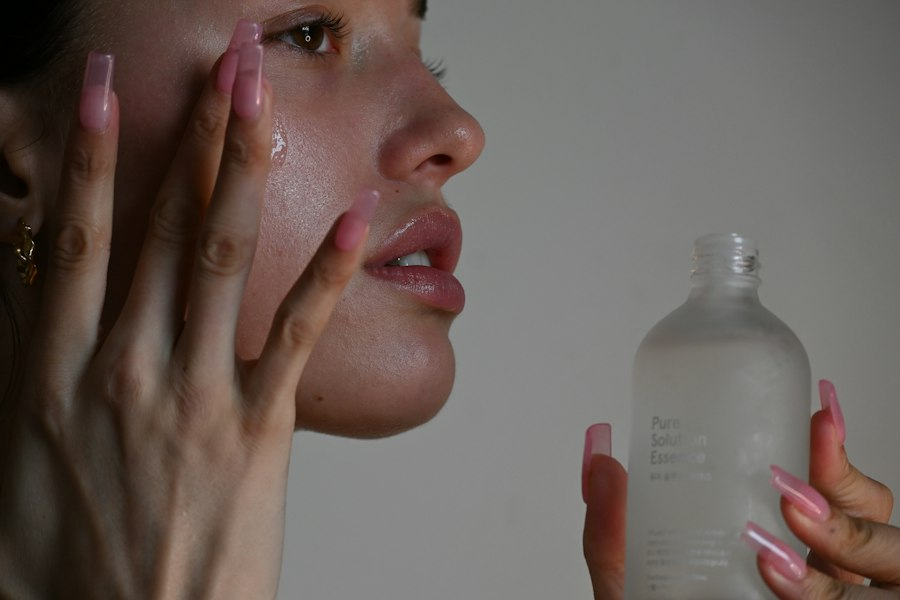

Economía conjunta
Economía conjunta
Accede a programas de ahorro en costos aprovechando el poder de la asociación.
ASOCLICPER agremia a las clínicas de cirugía plástica, estética y reconstructiva de Colombia para trabajar juntas en el fortalecimiento y el constante mejoramiento de sus instituciones.

Cada clínica asociada opera bajo los mismos estándares de excelencia y seguridad del paciente.
Bienvenidos a la Asociación Colombiana de Clínicas de Cirugía Plástica, Estética y Reconstructiva, ASOCLICPER. Nos enorgullece ser una organización sin ánimo de lucro que surge en el contexto de la emergencia sanitaria. Nuestro objetivo principal es agremiar a las clínicas de Cirugía Plástica de todo el país, con el fin de trabajar juntos en el fortalecimiento y el constante mejoramiento de nuestras instituciones.
Cinco años fortaleciendo la seguridad del paciente y la excelencia médica en toda la red de clínicas asociadas.
Los procedimientos con mayor demanda entre las clínicas asociadas a nivel nacional.

Reducción de tejido adiposo en muslos, pelvis, glúteos o brazos por liposucción o lipectomía
Mastopexia
Blefaroplastia superior e inferior
Lipoinyección glútea
Explantación mamaria
Fortaleciendo nuestra red de clínicas asociadas a ASOCLICPER en todo el país.
Únete a Asoclicper y forma parte de una comunidad con un claro propósito.
Tener voz en el sector es clave. En Asoclicper representamos tus intereses y encuentras apoyo integral para tu clínica.